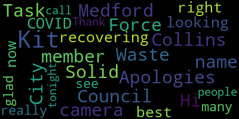
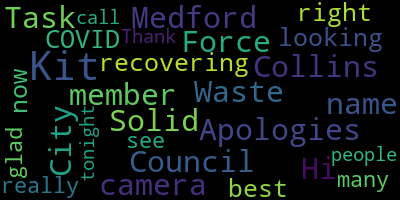

total time: 4.84 minutes
total words: 820

total time: 0.25 minutes
total words: 53

[Unidentified]: Great. Hmm. Recording in progress. Welcome, everybody. We'll get started in a minute.
[Hunt]: We're just, as usual, letting people get all logged in. Participants won't be able to unmute themselves until we go to breakout rooms, and then you'll be able to unmute yourself. All right. We're still letting people in. I think we should probably get started. I don't want to keep people waiting while their people are late.
[Unidentified]: Welcome, everybody. Thank you for joining us. Jeremy, are you ready? You're going to do the slides? Okay. So welcome, we appreciate everybody for coming this evening. Are you gonna... Do you have slides or should I talk first?
[SPEAKER_03]: Oh, yeah, there's some slides. Alicia, I thought we'd just cover some housekeeping bits before we get into the meaty stuff.
[Hunt]: Yes, are there slides for the housekeeping? I thought there were.
[SPEAKER_03]: Oh yeah, are you not seeing them? No, we are not seeing slides. You're not seeing my slides. Oh, okay. Well, let me reshare my screen because, um, I thought that they, my screen was already being shared. Sorry about that. Everybody.
[Hunt]: Great. I'm glad I said something.
[SPEAKER_03]: Me too.
[Hunt]: Um, as Jeremy's resharing, um, my name is Alicia Hunt. I'm the director of planning development and sustainability. And along with Tim McGivern, who is here this evening, who was our DPW commissioner, We are co-chairing this effort around our waste streams in Medford. And we have, Jeremy, we are seeing the presenter's view because I can see the timer, the audience tools and speaker notes.
[Unidentified]: Let me fix that.
[Hunt]: Yes, you're sharing your whole desktop and not just the one window. We have with us this evening Madeline Levin, who is a graduate student in planning from Harvard, who has been assisting us on our waste efforts, as well as Jeremy Drake and Gary Lease, who are consultants who are helping us with the waste assessment and request for proposals for a new waste contract. We also have several members of the Sustainable Waste Committee with us this evening as well. Thank you guys for coming. So we are holding this meeting to sort of to share some of the information that we've heard and to provide feedback, some housekeeping things for you. We're actually going to mute everybody now. Everybody can't unmute themselves. You can type in the chat. You can add questions and comments there. We will be doing breakout sessions after each topic to really hear from people. And when we do that, everybody will automatically be able to unmute themselves. And we really encourage you to speak up and share your thoughts with us. We are recording this, and this is being streamed live to YouTube this evening. There are too many things going on, so it's not live on Medford's cable, but it will be rebroadcast there. And there are also little indicators. You can use reactions at the bottom. It's not showing on this video to raise your hand if you want. There's also a live transcript if you want closed captions. There's a CC at the bottom of your screen. You can click on that. I think it says live transcript. If you don't see it, you probably see three dots at the bottom of your screen. You can click on that for more, and then you'll be able to see the captions as well. So, you know, Jeremy, we didn't discuss at what point I was turning this over to you, but I think up until the poll, right, I'm doing this part. So, welcome this evening. We are looking at our waste services here in Medford. We've been hearing for a long time that people are dissatisfied with them, but also our waste contract is ending and we need a new contract. And so as part of that, we said, well, we don't wanna just keep doing the same old. The world of trash has changed. The world of recycling has changed and Medford has changed. And we need to evaluate what we want to have going forward and not just roll out a new contract for what we've had forever. residents should know that it costs a lot of money to get rid of trash. It also gets a lot of cost money to get rid of recycling too. It's harmful, there are environmental difficulties with it. We put a lot of things in the trash that aren't trash. Recently, the state has just implemented a ban on putting fabric For example, in the trash that can be recycled, a lot of things that we currently throw away, and actually all our food scraps can be composted. They don't have to be trash. So anyhow, this is, we're gonna make some changes now. So as I did mention, we've been hearing from residents, we've heard from businesses, and not just since we started this effort. Residents have been telling me for the last eight years that every other week recycling isn't enough, they have too much recycling. They've been telling me for years that they want the city to roll out a composting program, right? This is not new. The regulations in Massachusetts have been changing around garbage disposal. And as residents know, we have an issue with, not just Medford has an issue with rodents, this whole region has an issue with rodents, but we need to do what we can do about it. So I wanna really thank the members of the task force who've been putting a lot of time into this. Many of these people are here this evening, but I will read out their names and my great thanks for being here and being on this committee. Angelica Ortiz, Dina Smith, Jacqueline Torres, Jim Schuman, John Doherty, Kit Collins, Lois Grossman, and Yvette Wilkes. So this evening, We're going to have an attendee poll. We're gonna have a presentation about where things currently stand. We'll talk about, then we're gonna actually talk about basic services. Jeremy will present about some things around it, and then we'll have discussion. We'll present a bit about bulky items and have a discussion, and then we'll present about additional services and have a discussion. And then we will have our next steps and closing.
[Unidentified]: So Madeline, take it away. I think we're gonna do two poll questions right now.
[Hunt]: The first one we wanna, do you wanna talk about it, Madeline?
[Evangelista]: Sure, we're just asking who is here. So if you see that box popping up, you can check all that apply. If you're a resident or business owner or a resident and a business owner, we'd like to know who's here tonight.
[Unidentified]: All right, I'm gonna go ahead and end the poll. I'm not seeing any, I don't know if I'm- I'm seeing the results.
[Hunt]: I will tell you that 80% are a resident in a building with three or fewer units. One is a four to 10 unit resident, or two are, one larger building, One is a business with a smaller business, and one is a larger business, and two other. Oh, I have to click the share results. I'm so sorry, everybody. We don't do a lot of polls in public meetings, so I'm not used to the poll feature.
[Evangelista]: All right, and I'm going to launch the other poll that we have. So I don't know if you can all see that, but it says, would you be interested in moving to every other week's trash collection if you had weekly food scraps collection? Yes, no, or maybe I need more information about that.
[SPEAKER_03]: Can folks see that because I'm still seeing the old poll.
[Hunt]: And I clicked away the old poll. Madeline, can you try to launch it again? Cause we're not seeing, oh, now I'm seeing it. Can people see it now? John and Dina, you're on my screen. Can one of you nod your heads if you're seeing it? Dina's not seeing it.
[Unidentified]: John, you're seeing it?
[Hunt]: Actually, I have 20 people have answered. Oh no, this is the who is here tonight. I'm gonna close that one. Now I'm seeing trash services. So this question, would you be interested in moving to every other week collection if you had weekly food scraps collection?
[Unidentified]: So this is, we wanna know how you feel right now about this. So let me share these results.
[Hunt]: 56% say yes, 10 out of 18, and six out of 18 say no, and two said maybe. So great. And now I'm gonna turn this over to Jeremy to present about where things stand.
[Unidentified]: Jeremy, you- Thank you, Alicia.
[SPEAKER_03]: So we're going to talk now about Medford's status quo, what's currently happening with the existing solid waste and recycling system, what are the features and what could be some of the opportunities. So the current collection services, I'm sure you're all familiar with them. It's weekly trash collection in a 64-gallon cart, often referred to as a toter. Some people call it a bin, some people call it a barrel. It's a 64-gallon cart tonight. Overflow bags are used by some folks, 33 gallon bags. They cost $2 a bag on a per bag basis. There's every other week recycling in a 96 gallon cart. There's seasonal leaf collections. Right now it's 15 weeks per year. There's bulky items collection. There's no cost and no real limit to what folks can throw out over the course of a year. And then there's a white goods collection service for $26 per item. So how does Medford compare to trash, to other communities in terms of trash disposal? This is a chart from MassDEP for 2021 data that was reported by communities all across Massachusetts And this is average pounds per household per year of trash. The different bars are different container sizes. Bedford in green there is a 64-gallon cart. The ones on the left are smaller, all the way down to just 33 gallon bags. And the ones on the right are up to 96 gallon carts of trash. So as you can see, Medford is kind of up on the higher end of Massachusetts communities in terms of how much trash is being disposed of. One good point, though, is that In terms of communities that use 64-gallon carts, Medford is on the low range of the average. That blue bar to the right is other 64-gallon communities.
[Hunt]: Jeremy, one second. If anybody still has the poll in front of the screen, we can't close it for you. You have to click the little button on it to close it yourself. Sorry.
[SPEAKER_03]: Thank you. So let's take a look at what's in our trash. So these are percentages by weight of materials going to disposal. That's from the US EPA from 2018. This is national data. So it shows that across the nation, 48% of everything that we're throwing away, throwing the trash is recyclable. 34% of that is compostable and 15% of it is potentially reusable or recyclable. A lot of people wonder, well, what happens to our trash in Medford? Where does it go? Well, this is a photograph of the Wheeler Braider Saugus Incinerator in Saugus, not too far from Medford. And it's a place where all the trash and all the bulk items go to be incinerated. There are problems with incineration that have been documented worldwide. As you can see, the exhaust from this one is particularly bad. There's a term toxics in, toxics out. Whatever you put into a facility like this will come out in one way or another, either in ash or in fumes and exhaust. What about our recyclables? So right now, although waste management is the collector, Our recyclables are going to the Casella Materials Recovery Facility in Charleston, Massachusetts. And it looks a little something like this. This is one of their facilities in another part of the state. And finally, yard waste composting. So all of the leaves and Christmas trees that get collected, they go to a yard waste composting facility where they're composted. There's also about 1,600 households that are part of food scraps collection, those go to another facility to be composted as well. So let's take a look at how Medford is doing in terms of what is in Medford's disposal stream across the board. So for trash, everything that Medford puts out on the curb, 69% of that is trash. 23% of that gets recycled through the single stream recycling and 8% is composted through the yard waste program. So if we look at that pie and we say, huh, 69% is trash. But then we go back and we look at this EPA pie of what is in the trash, we see that, wow, almost none of that is actually garbage. A lot of it we can recycle, we can compost, and we can even reuse. So then we go back and we look at this and we see that there's a bit of disconnect. It seems like there's some opportunity for Medford in terms of what we can do with the things that we throw away. So that's our baseline understanding of the system. Now we're gonna dig into some details in this first topic, basic services, of what we're proposing could be a future for Medford's collection services. So as part of this conversation, we need to talk about who is included in the services moving forward. So what we're considering for inclusion are one to three unit residences, K through 12 schools, houses of worship and all municipal facilities. So also what we're considering for basic services are the services of trash collection, recycling collection, and compost collection, in this case, food scraps, food soil paper, and that's tissues and tea bags, small yard trimmings, those sticks and leaves, and then also seasonal yard trimmings collection for the bigger stuff. So the foundation of this proposal is really weekly collection of the stuff that rots, stuff we compost, it's called putrescibles. This would be collected every week, in a 13-gallon cart with a locking lid like you see on the side there. That's the cart that's currently used by the food scraps composting programs in Medford. It's approved by the health department because it's rat resistant. Materials that are accepted, as I mentioned, all food scraps. We're talking about meat and bones and fish, your turkey carcasses, everything that came out of the ground can go into this stream. So as a corollary to this, once we have all that stinky stuff out of the trash, part of this proposal is going to every other week trash collection. So trash collected every other week in a 64 gallon cart, the same cart you're using now, there would be the option to pay for more frequent collection if a resident wanted that, or if an entity wanted that, and overflow bags would still be available. The benefits of this is that you're cutting the number of trucks for trash in half and the wear and tear and the reduced emissions and the lower cost for the service are benefits. So we're also considering sticking with every other week recycling, sticking with that 96 gallon cart. Again, you'd have the option to pay for more service if needed. But the reason, the rationale behind this is that We've done some research and it turns out that more frequent collection does not mean more recycling happens. Let me show you what I mean by that. So this is a comparison of Medford and various neighbors. So Medford's the dark blue bar. The other neighbors are the light blue bars. And as you can see, Medford is the only community with every other week recycling collection. All these other communities have weekly recycling collection. but Medford's doing better than 75% of its neighbors in on this chart. Um, this data is supported by national data, uh, by the recycling partnership that suggests the same thing that there really isn't a difference in the amount of materials recycled on a per household basis per year, uh, from weekly to every other week collection. It's the fact that the service exists. That's the key factor here. So real barriers to recycling do exist though. It's not the frequency of collection. One barrier is recyclables are still going in the trash. We know that because of the EPA data shows us that. And we know that because in every community we can recycle better. Another barrier is contamination. This is the stuff that shouldn't be going in the recycling that does. And it damages the materials in there that are actually recyclable. So last piece of this topic before we shift into discussion. Seasonal and yard and leaf collection. So 15 weeks is what we're at now. We're suggesting going up to 20 weeks. And this would be same process as now resident owned pans or in paper bags. Benefits to this is that there's, you know, more weeks that you have opportunities to keep stuff that's compostable out of the trash. And that's, that's a good thing. So as we're about to shift into breakout rooms, we have some questions we want you to keep in mind as we make the shift. We're going to shift into two rooms and we're going to talk about that before we go. But first, let's just review these quick questions here. So what do you think of weekly composting collection? What do you think of every other week trash collection? How do you figure out what goes in recycling? How do you know if it's the right thing or not the right thing? And would you like to see four and greater unit buildings, residences and businesses included in this services that we just described? So we'll get those questions in your discussion rooms in a moment, but before we do, just some breakout session etiquette here. Raise your hand to speak. This is the stuff that Alicia was talking about before with the raise hand button there. And when you do speak, please introduce yourself, let us know your name, let us know if you're a resident or if you work in Medford or both and what area town you're in. So I think we're breaking.
[Hunt]: I just want to clarify, there were a bunch of questions in the chat, but there was one thing that I think was important because it was around sort of the rats and composting. So one thing that we didn't think to include in the slides is that the containers that are used for composting, the small ones you see around their lids latch and our health department has approved those because it is dramatically harder for the rodents to get into those. And it's actually easier. for the rodents to get into our large garbage cans that don't latch than it is into the compost bins. So that was part of why composting is actually better than that. And I think that Jeremy and Tim and I are in the various breakout rooms and can probably answer all the rest of the questions in there. I just wanted to make sure everybody had that information.
[Evangelista]: All right, I'm gonna go ahead and open all the rooms. Sound good? Yes.
[Unidentified]: Thank you very much.
[SPEAKER_20]: Welcome everyone. We've got a nice group here. And we first wanted to have everyone just introduce themselves. I'm Gary Liss, a part of the Zero Waste Consulting Team, working with Jeremy Drake on the project. Alicia, you've met already. Lois? If everyone could unmute.
[SPEAKER_12]: I'm a Medford resident. and a member of the task force. I was a member of the mayor's commission that initially set up recycling in the program we have now. So it's kind of interesting to take 11 years. Great. Thanks, Lois.
[SPEAKER_00]: Hi folks, John Daugherty. Sorry, I missed the last meeting. I was in Italy studying the waste removal in Florence, Italy, which I'll provide some video maybe at one of our future meetings, but it's good to be back. And I'm a lifelong resident of Medford and have a lot of interest in this particular area. I was, a main person in doing Boston Public Schools recycling program some years back. So recycling is a near and dear to me.
[SPEAKER_20]: Great. Thanks, John. Jacqueline?
[SPEAKER_18]: Hi, I'm Jacqueline. I'm also part of the task force. I live in Medford in the Wellington area.
[SPEAKER_21]: Hi, I'm David. I'm a resident of Medford.
[SPEAKER_20]: Fantastic, Christy.
[Graham]: Hi, I'm Christy Stone. I live in West Medford. I've been here over 20 years. I'm just a resident. I've never been involved in any committee or anything, but I have very strong opinions about trash and recycling. So when I heard about it, I thought I'm in.
[SPEAKER_20]: Fantastic. Lara? Lara? Going on. I need to unmute. Or Eunice? Unmute.
[Browne]: Hi, Eunice Brown, lifelong Medford resident from the Hillside area.
[SPEAKER_20]: Great, Kathleen.
[SPEAKER_02]: I'm a Medford resident and I'm on the Energy and Environment Committee and very interested in trash, how to reduce it and recycling. Thank you.
[Collins]: Kit. Hi there, my name is Kit Collins. I'm on the Medford City Council. I'm a member of the Solid Waste Task Force Apologies for being off camera. I'm recovering from COVID right now, so not looking my best, but really glad to see so many people on the call tonight. Thank you.
[SPEAKER_20]: Best wishes for better recovery soon. Karen.
[SPEAKER_17]: Hi, I'm a Medford resident of five years. I'm very interested in recycling and I currently compost with garbage, garden to garbage or whatever it's called.
[SPEAKER_20]: Great, fantastic. And Medford Community Media.
[Hunt]: That's actually our TV station that is broadcasting. So we don't need to talk. So Madeline just shared with us the questions. Yeah, Madeline can't hear me. I'm gonna message her and ask her if she can message them so that I can post them in the chat so they don't disappear.
[SPEAKER_20]: Okay, the first question is what do you think of the weekly composting collection? And I'd like to ask first for people who are not on the task force to respond as we're trying to get additional input besides beyond that of the task force. So what do you think of the idea of weekly compost collection? Anyone raised hand, David? Or that's a thumbs up.
[SPEAKER_21]: I'm for it. I do it already, but so I'm forward continuing to do it again.
[Graham]: I think it's a great idea, but it will require a lot of education. And that's actually my, I guess my view on all aspects of this is that it would, people don't, most people don't understand what it is and they'll think it's a lot of work. So it will require a lot for us to make it successful.
[SPEAKER_20]: Okay, great. And when you say it will take a lot of work, what do you envision that?
[Graham]: No, I think a lot of people don't know what it is. A lot of people don't know what composting is. So it will require a lot for us to educate them and then to make sure they're doing it the right way, which I know is also an issue with recycling. A lot of people don't do recycling very well. So, I mean, education is really, that's like the big issue around all of this, is getting people to do it the right way so that we can be truly successful in how we're getting rid of things.
[SPEAKER_20]: Right. So when you say it will take a lot of work, you're referring to the city and the education. Is that what you mean?
[Graham]: Yes. I guess I also meant that I think residents who aren't familiar with it will have the preconceived notion that it will take them a lot of work to do it right. And they may just say, I don't wanna do it. It's too much work.
[SPEAKER_20]: Okay, great. Other hands, Eunice?
[Browne]: Yeah, kind of jumping on what Christy had to say. I don't know that I have an opinion on it yet because I really don't know what it is and what it entails. I mean, I think everybody in the city probably knows and understands what the recycle bins are for, whether or not they use them and recycle as they should is another story, but I think we all know what it's there and what it's for. How do you, what do you do with a compost bin? So, I mean, I, you know, I have no idea, so I don't know whether I'm for it or against it. I think my purpose in being, you know, in tune to what's going on with this task force and so forth, I'm relatively happy with the way trash pickup is now, with the exception, my main interests are extending the leaf pickup and doing something about bulk pickup of stuff and basement cleanouts and things, just getting rid of the crap that you find when you do a basement cleanout. So I don't know if I'm for or against composting, because I have no idea what it is.
[SPEAKER_20]: Great. Very good input. Kathleen. If you could put your hand down, Eunice, when you're done. Kathleen.
[SPEAKER_02]: I agree with the education portion of it and just want to ask, is it, would that be all food scraps or just particular? items that could go into composting. I live in a place where we don't have any garbage disposal, so all of our food goes into the trash, which is, you know, aggravates me. And we could definitely cut out the trash volume that way.
[SPEAKER_20]: Thank you. Great, fantastic. Are there any members of the task force that want to either respond to the comments made about those, like one or two of the task force members to respond? Any comments? And then we'll go on to the next question. So any task force person want to respond?
[Hunt]: I also want to make sure that people who walk away from this meeting understand that composting that when we're talking about it with from the task force in the city is the commercial composting. So any food scraps, like as Jeremy was mentioning, you can put bones, you can put grease, you can put any foods cooked, uncooked. You can also put all your paper towels, all your tissues. They have to be processed at a facility that reaches over 140 degrees Fahrenheit. So everything gets broken down in that. So it's not restricted to what you would do in backyard composting. Most people find if they use this commercial composting, they've taken everything out of their waste that is smelly, except not diapers, animal waste, no animal poop.
[SPEAKER_20]: Christy? Great clarification, Christy?
[Graham]: Yes, my question is, you mentioned paper towel. I use a service, I use a Black Earth composting myself. And for that one, my understanding was you can only put paper towels in that have food on them, but if you'd use them for cleaning, like, you know, Windex or something like that, you couldn't put them in. Is the service that Medford is considering, they can also take that sort of thing? Do you know that level of detail?
[SPEAKER_20]: That would be one of the outcomes of the RFP that we would find out. We'll be soliciting a variety of vendors that could provide the different services, including the composting. And each of the composters will have different requirements and capabilities based on what type of technology they use, how they run the facility and so forth. So at this point in time, what we're highlighting for general commercial composting, what Alicia was talking about, the specifics will be when we get through the request for proposal period and have selected a vendor who will have clear guidelines on what they can accept and cannot.
[Graham]: I just think getting back to the education part of it, sometimes it might actually be in our better interest to restrict some of those things, just because it will be harder for people to understand what is or isn't allowed. So I had put this chat earlier about the whole tissues thing. I wonder if that might be getting a little bit too... I don't know how to say this delicately, but people could misinterpret that and end up putting in more things than are really allowable. And I guess we don't need to get into all the details there, but tissues are one thing, but then people are like, oh, well, I'm gonna, yeah, I'll put the diapers in too. And then there's a whole host of other things we could mention. Again, it comes down to education. And I think we need to keep those things in mind. when we look at a contract and what is accepted and what isn't. Like how are we really gonna teach people the right way to do this? And if so many things are allowed, some things may be misinterpreted too easily. So it's just something we keep in mind.
[SPEAKER_20]: Right, I love the point about it's not just what the technology can accept, it's what the public can understand is a really great insight, really, really helpful.
[Graham]: And we might be better off taking maybe a smaller step ahead and do it right and do it better than making a bigger step and have a lot of not good results. So it's just one.
[SPEAKER_20]: Right. Okay, Eunice.
[Browne]: Um, yeah, thanks. Is there a place that we can go maybe another website or something or another communities website or something that we can see how this composting thing works in other communities or maybe other companies that like the Garden to Garbage and the Black Earth? what they accept and don't accept so that, you know, we get an idea of what we might be, you know, facing when we, I would imagine that this will probably come to pass, but, you know, it would be nice to educate people beforehand how it actually works.
[SPEAKER_20]: Right, have you seen the Garbage Garden or Black Earth websites?
[Browne]: No, I have not.
[SPEAKER_20]: So we will get you links for those and they have really good information on them that will begin that availability of information that you're looking for.
[Hunt]: I just dropped the links to both of them. So the city's recommended one is garbage to garden. And that's the one that when we did an RFP, that's the one that we chose at that time. drop the link to that there, frequently asked questions. And I also just grabbed the Black Earth one and dropped it in this chat so you could have it this evening. Thank you.
[SPEAKER_20]: Great. So why don't we move on to the... Next question, which was what do you think of every other week trash? We got a general sense of all those attending at the beginning of the workshop. But now that you've heard some background and are understanding what's being proposed for composting, which could handle up to 20 to 30% of the average household's current trash going to waste. What do you think now about every other week trash? Again, why don't we start with other than the task force and then we'll have one or two task force members respond to any comments that have been made. So Karen.
[SPEAKER_17]: I live in a triple decker and we have three trash, large trash barrels. 90% of the time, we only use one. So I think we're totally fine with going for every other week. I just wanted to say something about the other question is a lot of it's just a habit. You have to hold different mindset to start doing the composting, just like bringing your recyclable bags to go grocery shopping. How many times do we walk out of your car and then go back to get your bags, right? It's just really hard to remember. So every time I throw something away, my daughter's like, mom, you got to put that in the compost. don't do tea bags, they have a metal table, you know, there's all this reminding. So if you did like a, I'm a designer, so I think visual, like if you did like a little poster or something that's easily accessible, also Garbage Garden has it printed on their barrel. I have the older barrel, which is really helpful, do's and don'ts. So that's all I wanted to say. So it's gonna be hard, but it's habit forming and it's definitely worth it.
[SPEAKER_20]: Great, great suggestions. Christy.
[Graham]: Okay, now I can't remember what my question was, sorry. I'm just getting so many information here. I'll think of it later.
[SPEAKER_20]: No problem. I'll go back to Karen's comment about the daughter reminding you that educational programs in the schools can often be helpful to remind us at home. So, Christy.
[Graham]: Okay, now I remembered. Do we have any sense? of how many residences have full garbage on a frequent basis. Like, I guess I'm saying like what, I mean, those of us here in this room and at this meeting, we're probably in the minority of the city. But then again, Alicia, you said that you hear so many people saying all these other things that they want in the city. But I just wonder how many people truly are interested in this in reducing our trash and how many residences have full trash bins every week and like with a lot of scary stuff in it?
[SPEAKER_20]: Alicia may have some insights, but I'd like to share this survey is a nice indicator. I think it's up to about 800 survey responses, Alicia. So that's a nice indicator that there's quite a few people that are tracking it. Everyone has comments about garbage and recycling, but how many people are actually willing to send back a survey? Again, they may be predisposed to wanting to address these issues more positively. And we've taken that into consideration, both at the task force and in staff discussions. Alicia, do you want to respond to how frequent, how full the containers are? Do you have any?
[Hunt]: I don't think we know that. What we can find out is the pounds per household that get picked up just because that, so that's a number that we have available to us because waste management takes all the trash and it all gets weighed and we get charged by the pound. for trash, and they know how many households we pick up from. So that is information that we have, and that is available from other communities. So we can look at that, but we haven't. That's different from the volume. On the survey, 60% of the people said either yes, or maybe I need information, to would you be willing to go to every other week pickup. for trash, which we thought given that those are people who have not received education on the costs and on the knowledge of some people from it were already composting. I didn't we didn't look at of that which ones were already composting. I think that we've heard very consistently that once people start composting, they really don't see the need for every week pickups. Because the weight, and honestly, you would take out your compost every night. If there's not smelly stuff in your garbage, you're not taking that out every night. The one place where I do foresee a problem is people with diapers. Diapers fill up your trash. And that would need to be some level of consideration that they might need weekly service or overfill flow bags, because that really does fill it up. Of course, there's cloth diapering, but I don't expect everybody in Medford to go to cloth diapering. A lot of people in Medford who have done it, but yeah.
[SPEAKER_20]: So I'd like to explore that idea. Show of thumbs up if you like the idea, if they've got diapers type of situation, being able to have an overflow of or weekly service. Does that make sense to you if there's a diaper problem? So thumbs up visually or by the reaction? Okay. That's great. Okay, we're going to move on to the next question then. How do you figure out what goes in recycling? This is getting out the recycling right issue that some people have talked about. Any comments about that? Where do you go for information? And one person did already respond that they liked the garbage to garden old container because it had clear instructions on the container. Any follow up on that, Christy?
[Graham]: Yeah, when I have a question about recycling, I look at the multi page brochure, you know, I have that in my kitchen. And, you know, it's because it's got the calendar on it, too. which I'm always looking at every week. So I look at that for more detail. Occasionally I've looked on the website if I wanted more detail or I had some other question, but that's where I go for everything. And it doesn't answer all my questions sometimes. And then for my composting service, which I pay for Black Earth, I also have their, that they gave me, I have that in my kitchen too, right next to the other one. So that's where I go.
[SPEAKER_20]: Okay, anyone else? Okay, Lois.
[SPEAKER_12]: Is there any way that the recycling hauler can provide something that goes in the lid of the container? I mean, is that done in some communities where it says it right on the bin?
[SPEAKER_20]: Yes, it's best practice, definitely. Okay, we're coming down the home stretch here. Our last question is, would you like to see four plus unit residents and businesses included? And that's included in the municipal system paid for by the city. So our four plus unit residents and businesses included, should they be included is the question. Any comments? And then I'd like to see thumbs up or down on that. So included four plus units in the municipal contract. Any comments, Karen?
[SPEAKER_17]: Well, why wouldn't they be?
[SPEAKER_20]: They're not currently universally, the current contract has a unique process by which they can get in or out at the discretion of the mayor.
[Unidentified]: Recording in progress. Welcome back, everybody. Take it away, Alicia.
[SPEAKER_03]: You wanna facilitate the report back?
[Hunt]: Yes, so we were gonna have, if I remember correctly, our scribes had agreed that they would report back, but I apologize. I don't have the list in front of me. Would one of you just raise your hand and I'll unmute you. I don't have the, the describes where Lois, you want to go first?
[Unidentified]: There you go. There we go.
[SPEAKER_12]: Um, we didn't quite finish. Um, but I'll tell you what we did do. Um, We talked a lot about compost. We talked about the need for education. The fact that people don't even know what it is, much less why they should do it. There's just a lot of unfamiliarity. Your explanation helped. but it raised questions about diapers and about tissues. And a lot of people are gonna need help understanding what composting is. On the every other week collection, I don't think we came to any conclusions. Again, the diapers were an issue because they bulk up trash for some people. Obviously, we have to think further about options for every week for some people, as opposed to every other week, if that's possible. What goes in recycling? People would appreciate more detailed information on how to recycle properly. And we talked about having it on the lid of the container the way it is for the compost. And we never did finish voting on the four units. Units of four or more.
[Hunt]: Great. Thank you, Lois. Dina, do you want to go next? Wait, I have to find you to unmute you. That's, there we go.
[SPEAKER_15]: Sure, thank you. We had some of the same concerns in our group that there's not a lot of communication and reinforcement about what's trash and what's recycling and all the more so if we move forward with composting, it's really gotta be clear and an ongoing thing of this goes in this bin and that goes in that bin and that goes in that. And then also the concern that even with separating the trash and the compost and the recycling that every other week trash pickup might not be enough and that the smell of what used to be in the whatever's in the trash could still attract rodents. And then there was some question around the options of dual stream recycling so that we separate glass and cardboard and paper and maybe get some money back for the city from those services. I think that is about it.
[Unidentified]: Great, thank you very much. Jacqueline.
[SPEAKER_18]: Lois and I were in the same group, so I have the same notes as her.
[Hunt]: Oh, okay. There were just two rooms then? Or am I missing somebody? Okay. Great. Thank you. And then, so I guess, Jeremy, do you want to take us to the next topic? Keep moving here. It's 655.
[SPEAKER_03]: Uh-huh. Great. We were going to do the quick second poll question. Madeline, can you launch that? Everybody, this is not a trick question. You've seen this one before already. We just wanna see if your opinion has changed at all after our discussion.
[Unidentified]: And while you're voting, I will mention that Madeline confirmed that this is streaming live on YouTube while we were in the breakout rooms. Great, we have 20.
[Hunt]: Great. I can share the results. 60% said yes, 25% no, and 15%, three people said maybe.
[SPEAKER_03]: Great, thank you all. Okay, I'm gonna stop sharing the results and then we're gonna shift to our next discussion topic.
[Unidentified]: Oh. Everybody see this? Topic number two, bulky items. Okay, fantastic.
[SPEAKER_03]: So topic number two, bulky items. Here's our current situation. Bulky items are collected curbside by appointment at no cost to residents. The costs are paid by the city and they're paid whether the item is there when the truck arrives or not. So it doesn't matter if somebody was like, nice chair, I'm going to grab that. City still pays if the truck is called and goes there. The cost is $25 per item. And year over year, the average is almost $400,000 as part of the current contract for the city to provide this service. So this is a pie chart from the survey. Maybe some of you took the Medford Talks Trash survey that's been open for a few months now. This is specifically around disposal of furniture. And so what it shows here is that a lot of folks who answered the survey are donating or selling their furniture. Some of them are availing themselves of the bulky pickup service. And some folks are doing some other things as well. So the service is being used clearly $400,000 a year. Other folks are not using it. Just a little little window into current practice. Some people are using the drop off at City Hall or the DPW yard too. So these are the changes that are being considered. Again, and I didn't stress this maybe enough earlier, all of what you're seeing tonight are proposals. They're ideas. Nothing is set in stone. This is why we're having the public workshop, because we want to get your input on these ideas. So these are the changes that we're considering for bulky items. That residents pay at least $5 per item. That $5 is a threshold that kicks in from the state funding to support waste reduction programs. And so by doing that, the city would get $7,000 per year from the state. Items would also go to reuse and recycling as possible. Right now, they go into the trash and they are burned in the incinerator. So this would be a rejiggering of the system to ensure that reusable materials are reused, recyclable materials are recycled. And then another piece is to host seasonal no-cost drop-off events. So that picture on the side, Community Dump Day. So that's from a community where twice a year, spring and fall, the contracted hauler sets up shop and takes a ton of different kinds of items that the community can go drop off at no cost. So that's the basics for this particular topic. So here are the questions that we want to ask. And Madeline, if you can paste these into the chat before we go, that'd be great. So what do you think residents sharing the cost of bulk item collection? What do you think is a reasonable price $5, $10, $15 an item? And would you be in favor of seasonal spring and fall free bulk drop off events? So we're going to head back out into our breakout rooms and we have about eight minutes to discuss this topic. Uh, so we'll do the same thing that we did before, um, touching on these three questions and whatever other ideas you have. So Madeline, go ahead and boot us. Thank you.
[Unidentified]: See you all over in the breakout room.
[SPEAKER_03]: And I will again post these three questions into our chat. Let's start by asking, what do you think residents sharing the cost of bulk item collection?
[SPEAKER_05]: Chris. I really don't have a problem with that. The only concern I would have is that We already run into people who just dump stuff in the city. They try to find an area where they can just get rid of it. I remember that even when I was younger, that they used to take stuff and just throw it down by the river at night. That would be my only concern with that. Having twice a year kind of places that you could just drop stuff off in bulk, that would be awesome. I mean, if we had a dump around here, I would have no issue with that. Great, thank you.
[SPEAKER_03]: Anyone else have thoughts about these issues here? Are you willing to pay to get rid of your bulk stuff? Hey, Joan.
[SPEAKER_07]: Yeah, so I agree with Chris that, you know, already people are dumping bulk stuff. I mean, we live in an area where there's a bunch of woods and we walk through and there's chairs here and computers there and, you know, that kind of thing that people just dump stuff. So, um, I mean I think it's reasonable for the you know five or, you know, $5 or $10 an item. I like the idea of, you know, biannual free bulk drop off events, that's good I mean they already have the paint shed where you can drop off paint cans, you know, a couple times a year. So the bulk items. I'm concerned about the example that you gave about, you know, somebody puts a, you know, a table or something on the street for bulk pickup and then somebody comes by and says, oh, this is great. And they pick it up and they go to reuse it and the city is still paying for it. So I feel like there's gotta be a way to, you know, circumvent that somehow. I mean, we've got the Everything Free Medford Facebook group that a lot of stuff gets transferred and reused and switched on. There's somebody that, you know, sponsors twice a year junk in the trunk, you know, over to Hormel Stadium you bring all your bulk items or whatever you have open up your trunk and it's a big free for all and everybody, you know, takes, takes, you know what they need and keeps it out of the landfill so. I feel like we need to, you know, look at those things before people go and I know it's on the website that says if you have something before you call it in to be disposed of, think about recycling, but it's the same thing with that I said about, you know, communicating about what's recyclable what's compostable, there's got to be a more effective right in the moment communication like, you know, printing on the, you know, containers and like, like, like somebody had mentioned earlier, you know, what's recyclable, what's compostable, it's got to be right at the moment that they're looking to dispose that they get that communication.
[SPEAKER_03]: Great, thank you for that great feedback, Joan.
[McGivern]: I just want to quickly add something, Jeremy, just for context. I think we don't necessarily know that it's someone grabbing a chair and selling it or using it or whatever. It's just the idea for $5 or $10 is that the resident has some skin in the game. So there's some accountability because we get a lot of ghosting on this too, we suspect. So where folks say they schedule a pickup, but there's no skin in the game, so they forget to cancel it, et cetera. So it's a high cost.
[SPEAKER_07]: So you could cancel it before the pickup?
[McGivern]: If you get skin in the game, the anticipation would be, yeah, you can cancel. Yeah. So I think a lot of folks, you know, that doesn't happen all the time while they forget to put it out. So anyway, a variety of reasons.
[SPEAKER_07]: I see. So you're saying that they would still have to pay the $5 or $10 pickup if the item was no longer there.
[McGivern]: Yeah, because we pay it anyway. That doesn't change. We pay the $25, the city pays it. It's just the city would be paying $15 and the resident pays 10. So there's both have skin in the game.
[SPEAKER_07]: I see. Now that's more clear.
[McGivern]: That's why I wanted to speak up just so everybody can understand.
[SPEAKER_07]: I'm like, okay.
[SPEAKER_03]: Thank you, Tim. Great, great clarification. So some good stuff going on in the chat. Lack of transparency for service informing the community would be helpful. Joyce, can you say more about that? Do you not have a microphone?
[SPEAKER_08]: Well, we don't know. We don't know. So if someone, you know, when you called up for the service, if someone informed you, then people may be more mindful.
[SPEAKER_03]: informed you about what the cost or the cost of the city or right all above all the information uh more people need more information okay gotcha i don't have a problem with people skin in the game but i think that the lack of information is a problem so that people can understand the impact of the actions that they're taking that's correct excellent Okay. Oh, um, see here. What about hazardous waste? Deborah? That's our third topic that we're going to discuss in a few minutes. So let's put a pin in that, um, bulk common shed where things can be dropped off, picked over a great. Okay. So that's another possible idea, right. To have a, um, like a, a reuse shed somewhere. Um, not necessarily a collection service or a seasonal event, but something that's permanent. Am I understanding that right, Deborah?
[SPEAKER_15]: So I know I'm supposed to be the note taker, but I do like the idea of a shed where you can drop off your stuff because you could also then pick up your stuff, right? Or other people's stuff. So it's like everything is free Medford, but a shed, which is not a bad option either.
[SPEAKER_03]: Great. Great. So we've got one more minute. We've got a couple more comments. Chris, can you make it snappy?
[SPEAKER_05]: Yeah. I was just going to say, I have skin in the game. I went out and bought all the stickers to get rid of old air conditioners and a scrapper knocked on my door and asked for them. So I had skin in the game. I still have my stickers, but now people have picked them up. So now I have all these stickers that are $25. Fair point. Yeah.
[Chenine Peloquin]: I think, I mean, even just, even just having like names of scrappers, like, like those things that every, all of us on everything is free know about, like that you call this guy for airplane ride or airport rides, and you call this person to come pick up your scrap metal, like having the city have a list of those more grassroots efforts to get rid of
[Unidentified]: Recording in progress. Hey, welcome back, everybody. Great.
[Hunt]: Dina, you wanna go first this time? Oh, wait, I have to find you and unmute you, sorry. If you literally use the raised hand, there we go. There, try again, sorry.
[SPEAKER_15]: All good. I think everybody in our group was pretty much on board with the idea of charging residents to have the bulk items picked up. The concerns there are, what about the people who continue to just leave stuff in the woods or on a vacant lot? And how do we kind of... curtail that. And if anything, that could happen more often if we start charging people. And then there was a good bit of discussion about the Everything is Free Medford Facebook page and Junk in the Trunk events. The limitations of there being, of course, that Not everybody's on Facebook, not everybody can get to the Junk in the Trunk events. It would be great to, our suggestion was to have a city yard or a shed or something for where people can drop off their bulk items. And then maybe even people could then pick up other bulk items. Like it would be an in-person, everything is free in Medford almost. Failing that seasonal bulk event pickups was, seemed to be a good idea.
[Unidentified]: I don't think anybody had any complaints about that. That's it. We're done.
[SPEAKER_18]: So our group also liked the idea of, you know, having sharing the cost of the bulk item collections. I think there was a broad consensus around having a day or two when it would be free so that people have the opportunity to put a lot of stuff. the beginning of summer, end of summer time when there's just a lot of things to get rid of, household cleaning, things like that. So to have an opportunity where that's possible. There was a concern around illegal dumping and around scheduling to make sure that, you know, people aren't, their stuff isn't being stolen before it's actually getting picked up. People liked the idea of around five to $10 per item. And then there was also talk around pricing it based on the size of something. So if someone's putting out a couch versus a small chair, should there be, you know, people pay different amounts based on sort of the size of the item that they're putting out on the curb.
[SPEAKER_03]: Excellent. Thank you, Jacqueline. Let's move on to our final topic. Topic number three, additional services. So here's our current situation with additional services. As Alicia mentioned before, MassDEP, the state has some bans on some materials, disposal of some materials, most recently mattresses and textiles. So the city of Medford currently has an agreement with a company called HandUp that residents can call to have mattresses and box springs taken away. It's a cost of $50 to $5 per item. Textiles, uh, the city has an agreement with a company called help C and that's no cost for that pickup. It's a collection service that you have to just go and schedule it through their website. So that's for any, any textile material. We also understand that there's currently no option for household hazardous waste now. So, um, This is again the survey results that we looked at before around some of the stuff that would fall into sort of hard to recycle materials, household hazardous waste, mattresses, mercury products, textiles. And this shows kind of how some of Medford is dealing with that. So a lot of folks are donating, that's yellow, donating clothes, books, furniture, some computers, some mattresses, some dishwashers and stoves. A lot of folks are throwing some of that stuff in the trash, batteries, household hazardous waste, textiles. Just very few people are scheduling pickups for this material yet. So there's definitely room for improvement there. So in terms of questions around this topic area, are the current services sufficient? And if not, what are your highest priority for additional services? And would you be willing to pay for additional services if they were available to you? So we're gonna break out into our final discussion group right now.
[Hunt]: Just as you do that, I'm gonna say, just so people know, I have to leave early. So Tim is gonna close this out. I'm gonna leave as our next breakout group ends. So thank you all for coming, but there's actually another public meeting downstairs and online that I have to be there a few minutes before they start this evening.
[Unidentified]: Thanks, Alicia.
[Hunt]: Thank you all for coming and Tim will close us out after this breakout meeting.
[Unidentified]: That's recording in progress.
[Chenine Peloquin]: What are examples of other services?
[SPEAKER_03]: Well, um, so right now there's the mattress pickup. It's $55 an item. Maybe that, that could be a high price. Maybe it's possible that that price could be lower. Um, if with a, with a different contract potentially, um, what other services, what other service, other collection, curbside collection of materials like electronics, for example, household hazardous waste collection, either events or a brick and mortar permanent location. Those are some ideas. What kinds of services are you thinking?
[Chenine Peloquin]: I mean, light bulbs, right? Like light bulbs and batteries. So like, I think that like, there's a sharps collection like in the hallway outside the health department and one at the police station. And then there's like, um, DP of the, um, public works office has some things like batteries and then Alicia's office had other things at one point. And so you had, you have to go to all these different places to drop off. And like, I'm one of those people that does collect all the little things and try to find the right place for them to go. And I'm in the, TerraCycle pen thing and I'm collaborating with Trove Green Provisions on Boston Ave to like, I'm the one that sorts all the black plastic containers and people can drop them off at my house all the time. So I'm that person, but it's a big pain in the butt. And it would be much better to be able to go to one place and say, here are my button batteries and here are my halogen light bulbs. They're like, whatever, the light bulbs go here and this goes here. and have one drop off and it would make it a lot more manageable for other people and for me.
[SPEAKER_15]: support clubs like the rowing club and whatever other ones to electronics recycling events as a fundraiser, which is great. I take advantage of that whenever I get them, but I don't always know that they're happening. And if I don't know, and I've got two kids in the public schools, lots of people don't know that those even happen. So if the town wants to take that on, awesome. And if not, then we should be promoting that somewhere at a higher level, I think. They make a lot of money doing it, and it gets a lot of big, undisposable things out of the house.
[SPEAKER_07]: Excellent. I like your idea, Shanina, about going to one place and not multiple places. because you're right. And there's limits too. Like I have these four foot fluorescent light bulbs that I use in the basement shop lights. And they go out from time to time and I collect them and I brought them to the recycling office and they tried to tell me, oh, you can only, you're limited to how many you can return. I'm like, that's gonna dissuade me from doing it.
[Chenine Peloquin]: You know, other communities do styrofoam. days. And that's something that I think we really need.
[SPEAKER_07]: Especially around the holidays when all those gifts come. Yeah.
[Chenine Peloquin]: That's something that I've saved up, but I can't always get to Salem on their two styrofoam days a year and figure out who lives in Salem that I can give it to. And then I know Melrose also does a rigid plastics recycling event I think each fall because they go to the parks. We also have a similar culture of like people bringing their, you know, little tykes, carts and stuff to the playgrounds, which adds a lot of play value to boring playgrounds, but also results in sometimes it being garbage instead of playable stuff. And so the Melrose Parks Department will notify people like, hey, in two weeks is our big plastics recycling. So like pick out the things that are garbage and leave them for us and we'll come get them. but then you know that as much of those things as possible are actually being recycled. So I think that that's, and especially since the Medford Family Network swaps have stopped taking gear, there's a lot of baby gear that needs a home and that people don't know how to dispose of and don't know that they don't need to buy. So that's a major waste stream in this community since the swaps have shifted from equipment.
[SPEAKER_03]: I want to say one thing about, um, the one-stop shop for all the hard to recycle stuff. That is a thing. Um, often it's called a charm, which is an acronym for center to hard recycle to center for hard recycle, to recycle materials. They have them scattered all across the country in different communities or different sizes. Um, but that's, that's definitely a thing. Um, so, uh,
[Unidentified]: That's how I would characterize what you just described, Shanine and Joan.
[SPEAKER_07]: uh great i'm just looking at some chats here and we've got just a couple more minutes uh dollars is a lot of money to dispose of a mattress and a box spring that's a lot of money and i know that you know i mean for the beds that i bought you know you buy one they said we'll haul away your old so i haven't had to deal with it But I did have to deal with it in Cambridge at my dad's house. We had a bed to get rid of. And I just called Cambridge and put it on the sidewalk and they took it. So, you know, it's hard. You know, I know it costs money, but there's got to be, I feel like the communities around us need to come together and figure out, you know, is there a central place in the surrounding communities that we could create to put all these hard to recycle materials?
[Chenine Peloquin]: Yeah, a regional approach like we do with hazardous waste. But also, can we get clarification on the hazardous waste being reopened? Like you can't go to Lexington right now either, so everybody's just putting it in the garbage or holding on to it, and then they're holding on to hazardous waste.
[SPEAKER_07]: Which is itself a problem.
[McGivern]: We're trying to get that going again, Janine. So we're working on it right now. It's trickier than it sounds. And I will say that the mattress thing is new as of November. So DEP changed the rules. So all the other municipalities are dealing with it too. And right now there's a premium, obviously, because the vendors out there know that it's a change in regulation. So the idea would be to try to get some better prices in years ahead. Anyway, the short of it. Happy to talk more with you guys. No meeting again, not funny.
[Unidentified]: Great.
[SPEAKER_03]: Um, so, um, wanted to, we haven't talked really about paying for additional service outside of the mattresses. Um, what if there was a, um, styrofoam collection day or, um, a charm that had a user fee, like you paid $3 every time you go through the gate, those kinds of things. Chris, you'd love that. What was that, the Styrofoam Collection Day?
[SPEAKER_05]: Yeah, I think that's a terrific idea. I hate throwing that stuff out. Anytime you get a television or any big item, it's got all the Styrofoam in it, and I really just hate throwing that away. It fills up the trash barrel and it's just, I just, I feel like that shouldn't be going into the landfill.
[SPEAKER_12]: Yeah.
[SPEAKER_03]: And you'd be willing to pay for an extra day to have that stuff taken away once a year? Absolutely.
[SPEAKER_05]: If you're saying like $3 to go in and take care of it, that would be awesome.
[SPEAKER_03]: Well, that might be a drop-off option, but a collection.
[SPEAKER_05]: A drop-off would be great. If we, you know, and it would depend on how much you're talking about charging, because it's like, If you're charging money, people aren't gonna do it. They're gonna just throw it in the trash. We have to talk about the demographics of our city too. It's like a good percentage of people that are here are younger. There are some oldies like us, and Deb, I know you, but there's a lot of people that won't take part in that kind of stuff if they feel like they're being charged. We also have to think about the, people over 65 too.
[Chenine Peloquin]: I don't think that Salem or whatever the community is in the North Shore. John, do you know which one it is? We're seven seconds, but I don't think they charge.
[Unidentified]: Recording in progress. Hi, welcome back everybody.
[SPEAKER_03]: Great, Tim, you wanna take over where Alicia left off?
[McGivern]: Sounds good. All right, so Dina, should we start with you?
[Unidentified]: I got you here. There you go. Thanks, yeah.
[SPEAKER_15]: Everybody's in favor of the city or the contractor picking up additional items that can't go in the trash or the recycling, right? light bulbs, batteries, styrofoam. It would be great to have a single place for all of those drop-off. Again, either the shed model or Jeremy introduced us or me anyway to a new acronym called CHARM, which is a Center for Hard to Recycle Materials. So if we had a one-stop drop-off for things like that, that'd be great. A lot of school sports parents support groups or whatever do electronics recycling events as fundraisers, which are great, but they're not widely publicized. So in a minimum, we should be publicizing those more unless the city wants to take on those events too. And then lastly, the participants in our group seem to be willing to pay for either the charm model or a styrofoam recycling event, whether it's pick up or drop off. But again, the caveat here is always that not everybody is willing or able to pay for that. And so if they can't pay for it or they won't pay for it, it's just gonna end up in the trash.
[Unidentified]: And so how do we mitigate that? Excellent, thank you, Dina. Jacqueline or Lois, who took notes for your group? It was Lois, right? So Lois, there you go.
[SPEAKER_12]: We didn't get too far on it, but the theme was, how do you clean out your basement? So it was the same concern. What do you do with things that aren't any of the above? And we never got too far in the discussion, but I sense that our group would go along with the same ideas that came up in Dina's group and look for the same solutions.
[McGivern]: That's it. Thank you very much, Lois. All right, and I'll just, I think this is it, right, Jeremy? We're closing it down, right? So I just want to thank everybody, another opportunity to thank everybody for coming tonight, helping out. This is very important. This is one of the city's biggest contracts, if not the biggest one. that we go into and it's multiple years so we want to get it as right as possible. We're in that phase now where we're preparing all the pieces that go into a request for proposal. So if you have additional feedback that you think about after tonight or you know someone who wants to give feedback, we will take comments right up to about December 6, and then January is the target for the request for proposal, new contract July 23, new services July 24. So things are a ways away, but we have to do this very early to make sure we have everything done correctly. I heard lots of excellent information that I know is going to make this project better. And, you know, I think that hopefully folks realize that we're really trying to get as much public input as we can in various ways. So again, just thank you very much. And if you need to reach out to me personally, you can feel free to do that. And then there's some contact information here as well, ocd.medford-ma.gov for further information. So have a good night, everybody.
[Unidentified]: All right.
[McGivern]: Good work, everybody. We just get met for community media on there you guys could probably end it when I said goodbye. As far as your recording goes.
[SPEAKER_03]: It looks like we've got a vet wanting to come back in recording.
|
total time: 4.84 minutes total words: 820 |
total time: 0.25 minutes total words: 53  |
||
{kind=link}